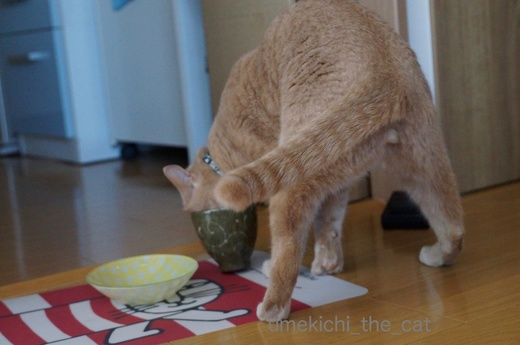
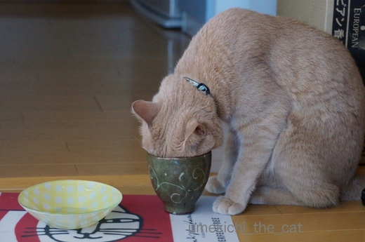
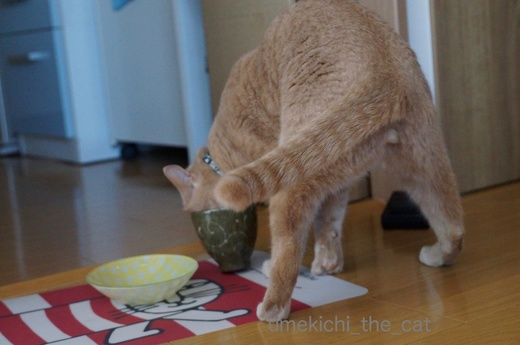
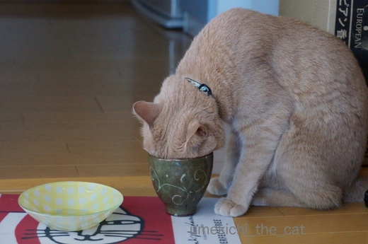

またたび茶ふたたび [梅吉]
前回の記事で「酔っ払う系の植物に反応しない梅吉」と書いたのですが
若干ハイになる反応をするものが一つあります。

それがこれ。またたび茶、人間用です。
暑くなってきたので水分補給も兼ねて梅吉に振る舞って見ました。

![[猫]](https://blog.ss-blog.jp/_images_e/101.gif) それ、わしのやな！はようっ、はようっ！！
それ、わしのやな！はようっ、はようっ！！
にゃ〜にゃ〜鳴きながらハッスルする梅吉さん。
人肌に冷まして水飲み容器に入れて「どうぞ」と振る舞ったのですが

ずぼ〜っ
好きなのはティーパックのお茶をだしていた湯呑み茶碗(⌒-⌒; )
お茶は底にうっすら残っている程度でほとんど入っていません。

変顔でひたってます。

何度も顔をつっこんで

遠い目。
中国茶に聞香杯というお茶の香りを楽しむための茶器がありますが
梅吉もそんなふうに湯呑み茶碗を使っている様です。
なかなか風流ではないですか！！
今回はまったりとまたたび茶を楽しんでいましたが幼い頃は大暴れ。
昨年夏の出来事です。
ちなみにその時の記事はこちら。
大人になり余裕を持ってまたたび茶を楽しむことができる様になりましたよ〜。
 ↑ガブッと一押し↑
↑ガブッと一押し↑
てをいれて
にくきゅうといっしょにあじわうんやで。
梅吉のお作法を見てちゃんとしたティータイム。
凍頂烏龍茶の新茶をいただきました。
アクリルのトレーがなんだかな〜ですね^^;
パイナップルケーキとマンゴーケーキが美味しゅうございました。
若干ハイになる反応をするものが一つあります。

それがこれ。またたび茶、人間用です。
暑くなってきたので水分補給も兼ねて梅吉に振る舞って見ました。

にゃ〜にゃ〜鳴きながらハッスルする梅吉さん。
人肌に冷まして水飲み容器に入れて「どうぞ」と振る舞ったのですが

好きなのはティーパックのお茶をだしていた湯呑み茶碗(⌒-⌒; )
お茶は底にうっすら残っている程度でほとんど入っていません。

変顔でひたってます。

何度も顔をつっこんで

遠い目。
中国茶に聞香杯というお茶の香りを楽しむための茶器がありますが
梅吉もそんなふうに湯呑み茶碗を使っている様です。
なかなか風流ではないですか！！
今回はまったりとまたたび茶を楽しんでいましたが幼い頃は大暴れ。
昨年夏の出来事です。
ちなみにその時の記事はこちら。
大人になり余裕を持ってまたたび茶を楽しむことができる様になりましたよ〜。
梅吉のお作法を見てちゃんとしたティータイム。
凍頂烏龍茶の新茶をいただきました。
アクリルのトレーがなんだかな〜ですね^^;
パイナップルケーキとマンゴーケーキが美味しゅうございました。

カフェオレ色の梅吉

梅吉 2023年8月10日 永眠


梅吉と出会った譲渡会

犬猫の理由なき殺処分ゼロ
妄想広告
UMEKICHI 光

爆発的に早い！
時々攻撃的！
Thanks to Mr.Boss365
爆発的に早い！
時々攻撃的！
Thanks to Mr.Boss365

ヒト用のまたたび茶があるのですね(*^▽^*)
飲むと気分がハイになるんでしょうか？？
湯呑に顔を突っ込んで踏ん張った足がかわいくて、後ろから足の間をチョップしてしまいそうです♪ ←猫変態^^;
お茶のセットステキですね！
by ゆきち (2017-05-21 15:06)
梅吉くんコップに刺さってる!!( ﾟДﾟ) またたびはネコのものと思ってましたが人間のもあるとは知りませんでした。で、お味の方は？(*^^*)
by palpal (2017-05-21 20:03)
人用？？そんなものがあるのですね！！
どんな味なのでしょうか？？
お顔を突っ込んで踏ん張る後ろ姿に萌えちゃいます(#^.^#)
by きぃ (2017-05-21 20:15)
サスガ、漢梅吉さん、風情が分かるんですね(*´ω｀)
だけど、カップに顔がすっぽりと...(^_^;)
（梅吉さんが「にゃ〜にゃ〜」言うなんて、ワタシは信じません！）
そう言えば、またたび酒ってありませんでしたっけ？
どんな味なんだろうにゃ～？(=^・^=)
by ひでぷに (2017-05-21 20:58)
ちぃさん、梅吉くんのように、茶碗の中に入っていませんか（笑）
人間用の『またたび茶』、又旅がしたくなるほど元気になるお茶とか？
茶碗をケリケリする姿、笑ッチャいました。
可愛いいね。
by kiki (2017-05-21 21:19)
無我夢中ですね！！
湯呑み茶碗のフィット感が気持ちがいいのかな。^^;
by yes_hama (2017-05-21 22:06)
そんなのがあるんですねー
見つけたら買ってみようかなぁー(´・ω・｀)
by sumi-cyan (2017-05-22 00:21)
ついに茶の湯の道に悟りを開かれたのですね。
素晴らしい！
でも、お茶碗けりけりの梅吉さんが可愛いけどね＾＾
by じゅらまろ (2017-05-22 09:57)
ええーーーーっ！
またたびって、人間でもイケるとはビックリ！！
お味、気になります。うーーーむ。
ところで梅吉さん、完全に悦に浸ってますね。
わび・さび、さえ感じさせる佇まい。。。
結構なお点前にゃ……とおっしゃってたのかも。
あっ、サニーヒルズだ！美味しいですよねぇ。
by morichan (2017-05-22 11:28)
クワシ！って開いたあんよも漢らしくて素敵ー♪茶の湯も身に着け、文武両道の凛々しいお子ね！
by Ginger (2017-05-22 12:12)
梅吉さん、大人になったんですねぇｗ
一年前のガブガブケリケリとは全く違って大人しく窘めてるなんてさすがです(^_^)v
by ニッキー (2017-05-22 15:19)
マタタビ茶どんな香りと味があるんだろう・・・
猫の嗅覚を借りたいわ～
梅吉さんの遠くを見る顔、なかなか渋いですね＾＾
by muku (2017-05-22 15:38)
またたび茶なんてあるんですね！
わお、ハッスルしてるぅ～♪
ちょうどいいサイズだったんですね～香りを味わうのに。
顔突っ込んで、しかもケリケリ？ 楽しんでますねー！＾＾
by sana (2017-05-22 20:17)
動画めちゃめちゃ可愛い^^
またたび茶、人間用があるなんて知らなかったです。
探してみなくちゃ〜〜
でも取り合いになりそうよねｗｗ
by リュカ (2017-05-23 09:51)
マタタビ茶をのんで「また、旅を続ける」とかかっこいいですね！
マタタビの文字を見続けてたら「またたたび」とか、「た」のゲシュタルト崩壊してきました…酔っぱらったかもしれない…
動画の梅吉君、スゴイですね！
お茶の格闘技！新しい茶の道を開拓しましたね！
by BillK-ko (2017-05-23 16:33)
ゆきちさん＞またたび茶、ヒトには疲労回復効果があるとかないとか・・・
が、私にとっては特に効用は感じず
「やっぱり疲労回復にはアルコールよね！」と結論に至りましたww
開いた足の間にチョップするのは飼い主の義務ですよね〜(≧▽≦)
palpalさん＞湯呑み茶碗にめり込む勢いでしたよ〜Ｏ(≧▽≦)Ｏ
またたび茶、柿の葉茶とかビワの葉茶とか、葉っぱの味です。うんwwww
癖はないので飲みやすいとフォローしておきます＾＾
きぃさん＞昔の人はまたたびの葉っぱや実を食べていたらしいです。
で、食べると元気になってまた旅が出来るので「またたび」だそうな〜。
味はね〜、乾燥した葉っぱの味です！ってわかりませんよね〜(≧▽≦)
市販品に例えると「十六茶」より渋くなく、「爽健美茶」ほど爽やかではない、
という感じで〜す。
ひでぷにさん＞流石に鋭いご指摘！私が間違っておりました。
梅吉は「にゃ〜にゃ〜」鳴くのではなく「にゃ〜にゃ〜」としゃべるのです！
大阪の子やからな！！
またたび酒、だいたいおじいちゃんが作っていませんでしたか？
残念ながら飲んだことなしです。
子供の時飲んでおけば良かった（ん？）(〃▽〃)
kikiさん＞はい＾＾
西大寺の大茶盛式に使うくらいの大きい茶碗が私様に・・・って
ありませんから〜(ﾉ≧▽≦)ﾉ
ご推察の様にまたたびは実や葉を食べるとまた旅を続けることができる、と
疲労回復効果が謳われている様なのですが
私には効きませんでしたのでアルコールにシフトしました！
yes_hamaさん＞もう、無我夢中、一心不乱でした＾＾
湯飲み茶碗の中の暗闇と
またたびの香りで軽くトリップしてるのでしょうか( ꒪⌓꒪)
２ちゃいの梅吉には教育上よろしくなかったかも〜^^;
sumi-cyanさん＞見つけたらぜひぜひお試しください＾＾
にゃんこさん達のそれぞれの反応を見るのも楽しそう！！
じゅらまろさん＞去年は我を忘れた様ですが
２ちゃいにして道を見つけたようですww
って、本当は今年もけりけり大暴れを期待してたんだけど〜^^;
morichanさん＞もともとは人間が食べていた様ですよ〜。
いつの時代からまたたび＝にゃんこ、になったのでしょうね。
またたび茶はいわゆる健康茶、葉っぱのお味です^^;
市販品に例えると「十六茶」より渋くなく、
「爽健美茶」ほど爽やかではない、うん、葉っぱです(ﾉ≧▽≦)ﾉ
ふふふ、サニーヒルズはパイナップルフィリングももちろんですが
外側のケーキ部分が特に好きです！
Gingerさん＞これで能でも一差し舞わせたら戦国武将の様ですよね(ﾉ≧▽≦)ﾉ
梅吉！下克上！！（なんのでしょうか・・・・ww)
ニッキーさん＞はい・・・すっかり立派な大人になって(꒦ິ⌑꒦ີ)
おとーさん、おかーさんがガブガブケリケリを
とっても期待していたなんて言えません・・・
mukuさん＞またたび茶、香りも味も「葉っぱ」です(*≧ｍ≦*)
市販品に例えると「十六茶」より渋くなく、
爽健美茶」ほど爽やかではない・・・
にゃんこはこの味のどこに惹かれるんだろうなぁと思いましたww
sanaさん＞猫用のまたたび茶もあったのかもしれませんが
ヒト用の方が安心かな、と購入しました＾＾
湯飲み茶碗、私が気に入って使っていたものなのですが
梅吉の顔の大きさにあまりにフィットして
ケリごごちも良さそうだったので進呈しました〜。
楽しそうですなによりです(ﾉ≧▽≦)ﾉ
リュカさん＞動画、可愛いでしょう？（親バカ）
幼い頃は酔うと絡むタイプの梅吉だったのよ！
またたび茶、あおうみ２ニャンさんにもぜひ〜。
取り合う姿を想像するだけでにやにやしちゃうww
BillK-koさん＞梅吉が、たまたまあったまたたびでまたまたあたまを・・・
ふうっ、「た」酔いするわね〜ww
お茶の格闘技！！良いですねぇ、その呼び名(((*≧艸≦)
by ちぃ (2017-05-23 19:02)